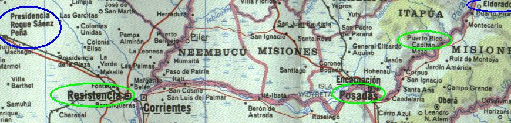

← anterior | principal | próxima →

Na cidade de Resistência, tem um trânsito meio pesado, então tem que ter bastante cuidado na direção.
Fomos "multados" por guardas mocados que nos perseguiram e fizeram encostar o carro na marra, quase provocando um acidente. A infração padrão é "excesso de velocidade", sendo que estávamos acompanhando o fluxo (e numa Toyota diesel que só vai até 90Km/h...).
Bem, de cara os lazarentos queriam 350 dólares por carro de multa, mas como eles eram "camaradas", poderiam nos liberar ali mesmo, sem precisar ir para a delegacia e sem burocracia, por míseros 50 dólares por carro! Absurdo!!
Depois de muita choração e o tradicional discurso "somos brasileiros pobres, estamos viajando com o dinheiro contado, não temos este dinheiro pra gastar, blablabla" eles fizeram a propina por 10 dólares por carro...
Malditos... E a forma de "pagamento" é igualzinho como apareceu na televisão aqueles policiais no Rio de Janeiro acho, naquela blitz onde extorquiam as pessoas. Você coloca a nota mocada na mão, e "cumprimenta" o maldito policial. Ele pega a nota, fecha a mão e ainda aponta o dedo a uma direção, fingindo que está lhe sendo útil dando uma dica para a viagem.
Quem vê de fora pensa "ó, que policial prestativo"... São uns lazarentos mesmo... O esquema já é todo arranjado... A quem interesar possa, a identificação da viatura era BVOB33-PR69.
Engolida a raiva, estranhos num país estranho, a viagem continua, e começa o retão maldito que nunca acaba...